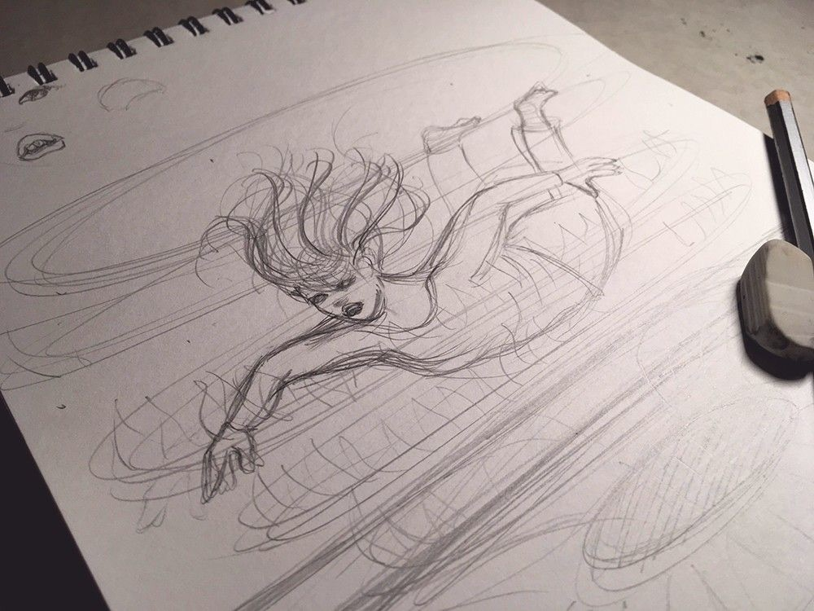
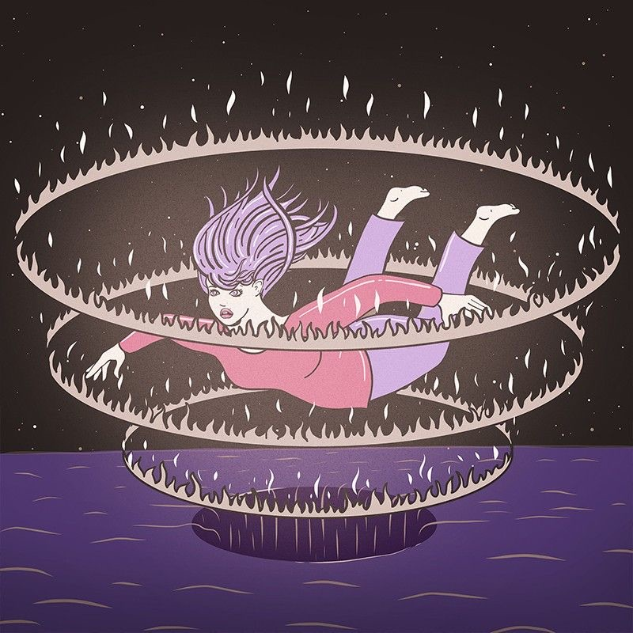
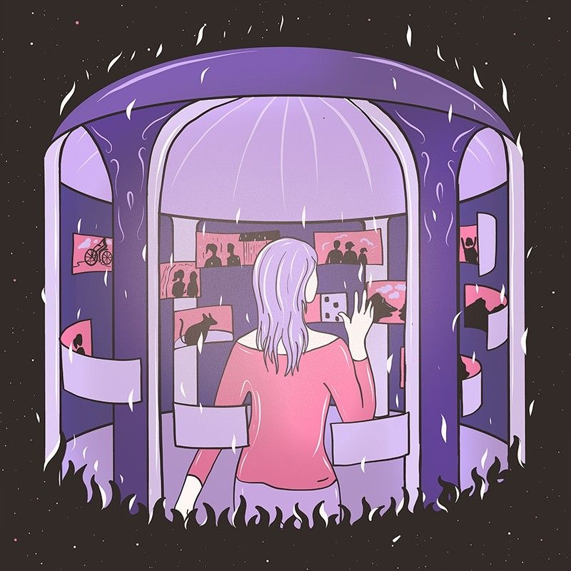
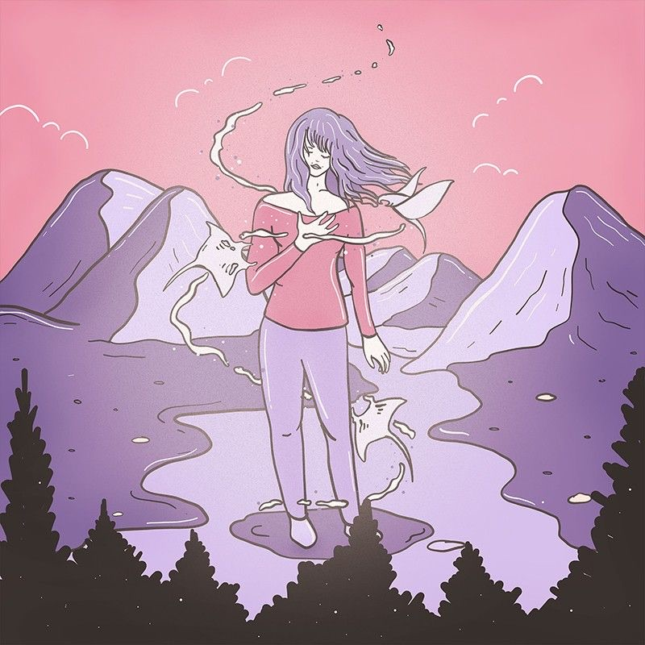
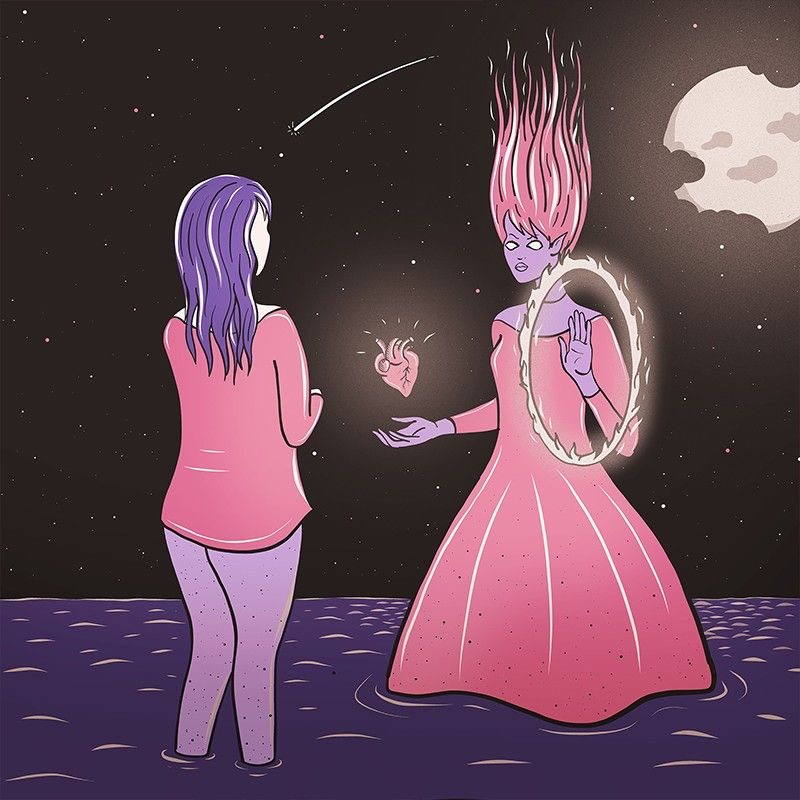
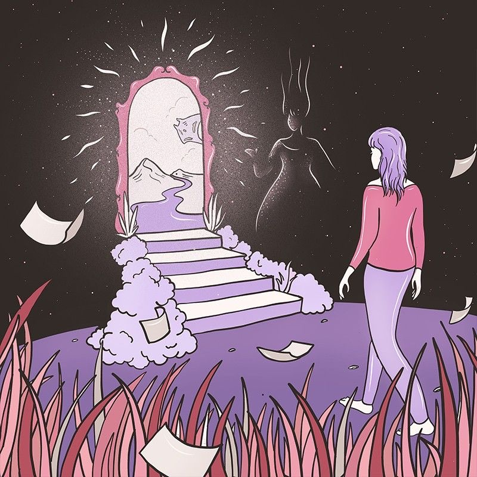

Saptan Stories
A seven-week illustrated story
Saptan Stories was a seven-week collaborative arts event, a mass game of consequences written and voted on by all of India.
It was run by Aardman Animations (UK) with British Council India, and I was handpicked as one of seven artists from the UK and India.
Background
The process began with the first line from the Aardman team. Every line after that came from the audience on a vote basis, and each artist took their own approach to it.
Because the story built up spontaneously, I had no idea what it would become before each line arrived. With every change in the story I intentionally kept a consistent style and colour palette, to keep it cohesive.
I loved how the story evolved, becoming profound, mysterious, fantastical and adventurous at the same time.
How might one story stay cohesive when an audience writes it one line at a time?

Process
Imagine. As I read each new line, I built up the scenario in my head.
Sketch. Then I made rough pencil scribbles, added more elements and composed everything in a frame.
Render. Lastly, I rendered the art with Apple Pencil on my iPad, mainly for inking, and coloured it in Photoshop.






Results
Seven weeks, seven lines and seven illustrations came together as one story that grew deeper with every vote.
It was a joy to be handpicked among seven artists from the UK and India, and to watch the story turn out so profound, mysterious and adventurous.
Read all seven lines with their illustrations above to see how the story evolved over time.